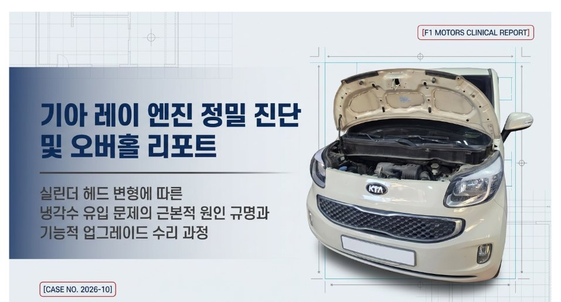
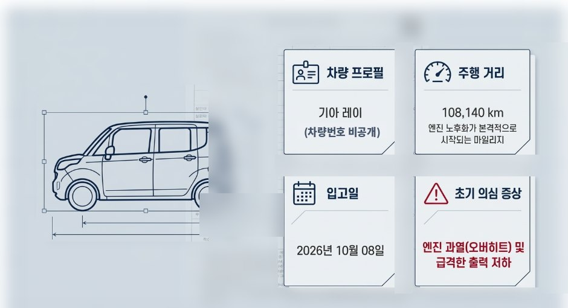
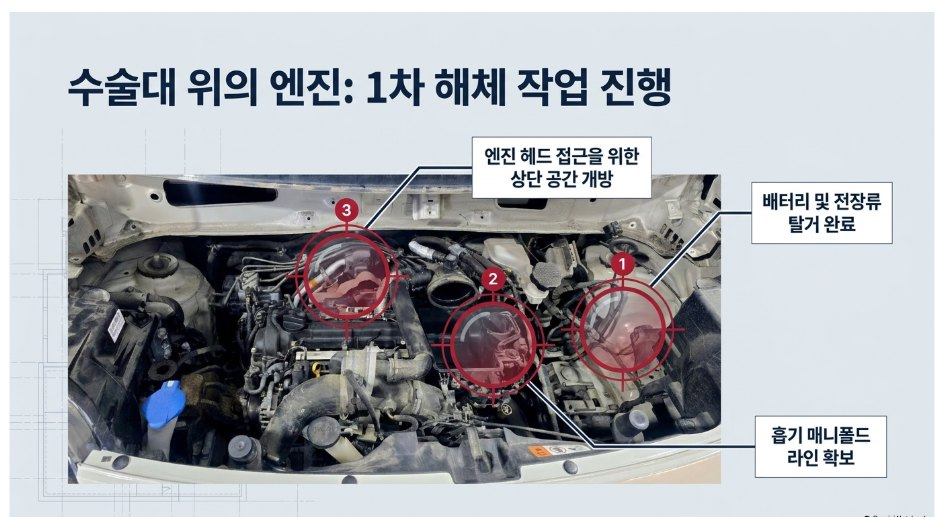
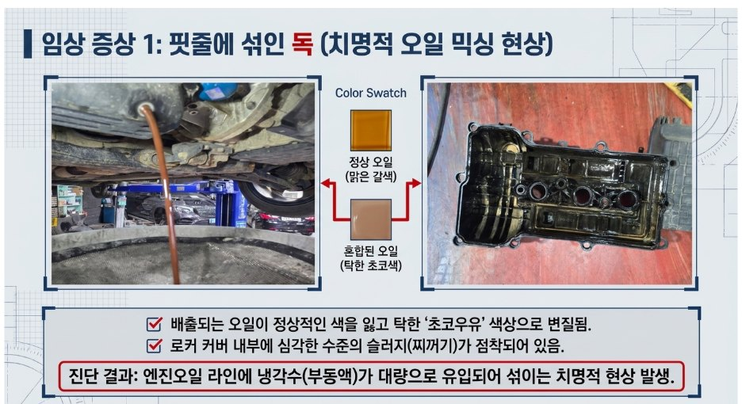
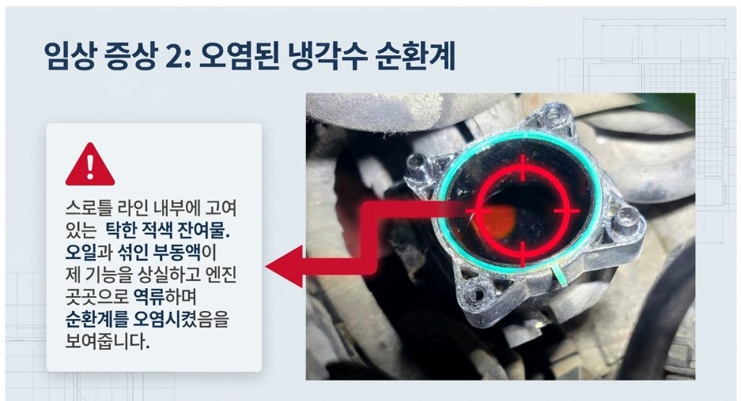
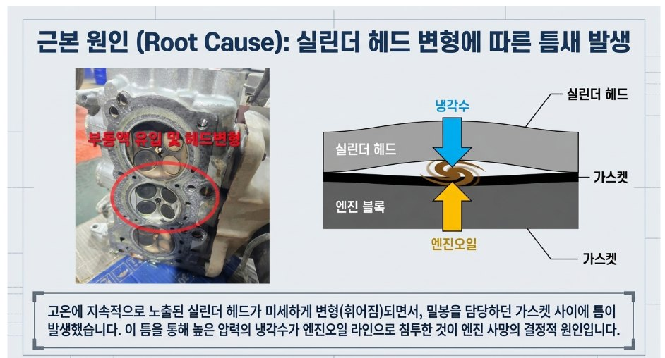
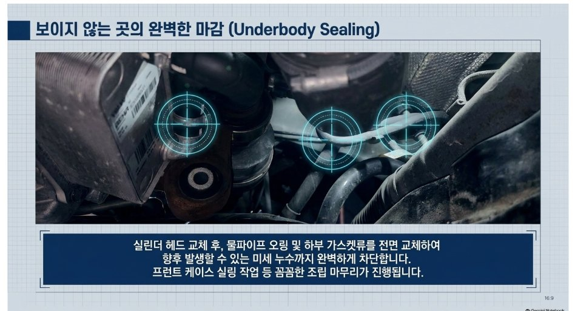

고장사례 및 검색 › 기아 레이
기아 레이 과열·출력 저하 — 실린더헤드 변형으로 냉각수가 엔진오일로 유입
- 차량
- 기아 레이 · 108,140 km
- 증상
- 엔진 과열(오버히트)과 급격한 출력 저하로 입고
- 원인
- 실린더헤드 변형 — 고온에 지속 노출되며 헤드가 미세하게 휘어 헤드가스켓 밀봉면에 틈이 생김. 그 틈으로 압력이 높은 냉각수가 엔진오일 라인으로 유입되어 엔진오일이 탁한 초코색으로 변질되고, 오일과 섞인 부동액이 역류하며 스로틀 라인까지 오염
- 수리내역
- 실린더헤드 탈착 · 실린더헤드 교체 · 헤드가스켓·헤드볼트 교환 · 로커암 커버 가스켓 교환 · 물파이프 오링 및 가스켓류 교환 · 헤드 전장품 이식 · 프런트 케이스 실링작업 · 엔진오일·부동액 교환
- 교환부품
- 실린더헤드 · 헤드가스켓 · 헤드볼트 · 로커암 커버 가스켓 · 물파이프 오링 · 하부 가스켓류 · 엔진오일 · 부동액
정비 사진 7장







이런 증상으로 찾아오십니다
- 기아 레이 과열
- 레이 오버히트
- 레이 출력 저하
- 엔진오일에 냉각수 섞임
- 초코우유 엔진오일
- 엔진오일 유백색
- 실린더헤드 변형
- 헤드가스켓 누수
- 레이 실린더헤드 교체
- 냉각수 줄어듦
- 수온 경고등
- 인천 엔진 수리
- 인천 실린더헤드 교체 어디서 하나요
비슷한 증상이 있으시면 전화로 상담해 주세요. 차종과 연식, 증상만 알려주시면 예상 원인을 안내해 드립니다.
인천에프원모터스는 제조사 공식 서비스센터가 아닌 독립 정비업체입니다. 정비 내용은 차량 상태에 따라 달라질 수 있습니다.